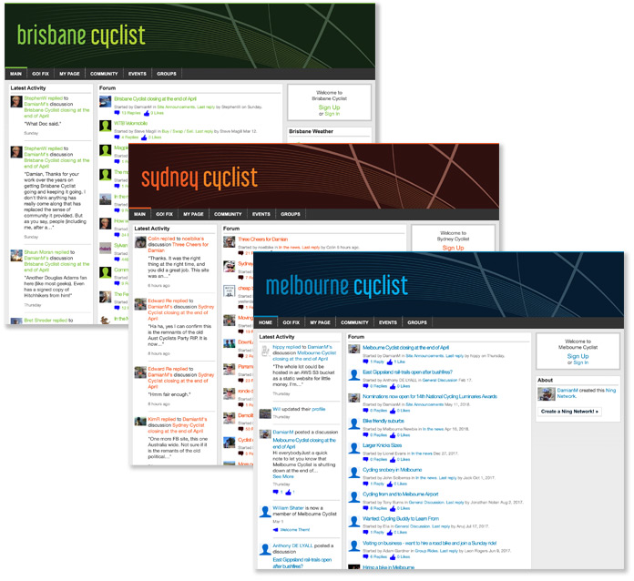

These sites were a 2007 creation of Damian Maclennan as an online community for cyclists in their local area.
They shut down in April 2020. Bicycles Network Australia has a Q&A about them and the shutdown.
